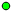

<!doctype html>
<html lang="en">
    <head>
        <meta charset="utf-8">
        <meta http-equiv="X-UA-Compatible" content="IE=edge">
        <meta name="viewport" content="initial-scale=1,user-scalable=no,maximum-scale=1,width=device-width">
        <meta name="mobile-web-app-capable" content="yes">
        <meta name="apple-mobile-web-app-capable" content="yes">
        <link rel="stylesheet" href="css/leaflet.css"><link rel="stylesheet" href="http://maxcdn.bootstrapcdn.com/font-awesome/4.6.1/css/font-awesome.min.css"><link rel="stylesheet" href="css/L.Control.Locate.min.css">
        <link rel="stylesheet" href="css/qgis2web.css">
        <link rel="stylesheet" href="css/MarkerCluster.css">
        <link rel="stylesheet" href="css/MarkerCluster.Default.css">
        <link rel="stylesheet" href="css/leaflet-search.css">
        <link rel="stylesheet" href="css/Control.OSMGeocoder.css">
        <link rel="stylesheet" href="css/leaflet-measure.css">
        <style>
        html, body, #map {
            width: 100%;
            height: 100%;
            padding: 0;
            margin: 0;
        }
        </style>
        <title></title>
    </head>
    <body>
        <div id="map">
        </div>
        <script src="js/qgis2web_expressions.js"></script>
        <script src="js/leaflet-src.js"></script><script src="js/L.Control.Locate.min.js"></script>
        <script src="js/leaflet.rotatedMarker.js"></script>
        <script src="js/leaflet.pattern.js"></script>
        <script src="js/leaflet-hash.js"></script>
        <script src="js/Autolinker.min.js"></script>
        <script src="js/rbush.min.js"></script>
        <script src="js/labelgun.min.js"></script>
        <script src="js/labels.js"></script>
        <script src="js/Control.OSMGeocoder.js"></script>
        <script src="js/leaflet-measure.js"></script>
        <script src="js/leaflet.markercluster.js"></script>
        <script src="js/leaflet-search.js"></script>
        <script src="data/Flurstueck_0.js"></script>
        <script src="data/Gewsser_1.js"></script>
        <script src="data/Gebude_2.js"></script>
        <script src="data/missstand_3.js"></script>
        <script>
        var highlightLayer;
        function highlightFeature(e) {
            highlightLayer = e.target;

            if (e.target.feature.geometry.type === 'LineString') {
              highlightLayer.setStyle({
                color: '#ffff00',
              });
            } else {
              highlightLayer.setStyle({
                fillColor: '#ffff00',
                fillOpacity: 1
              });
            }
            highlightLayer.openPopup();
        }
        var map = L.map('map', {
            zoomControl:true, maxZoom:28, minZoom:1
        }).fitBounds([[49.1074922007,8.85880990511],[49.3887753546,9.49296324131]]);
        var hash = new L.Hash(map);
        map.attributionControl.addAttribution('<a href="https://github.com/tomchadwin/qgis2web" target="_blank">qgis2web</a>');
        L.control.locate().addTo(map);
        var measureControl = new L.Control.Measure({
            primaryLengthUnit: 'meters',
            secondaryLengthUnit: 'kilometers',
            primaryAreaUnit: 'sqmeters',
            secondaryAreaUnit: 'hectares'
        });
        measureControl.addTo(map);
        var bounds_group = new L.featureGroup([]);
        var basemap0 = L.tileLayer('http://{s}.tile.openstreetmap.org/{z}/{x}/{y}.png', {
            attribution: '&copy; <a href="http://openstreetmap.org">OpenStreetMap</a> contributors,<a href="http://creativecommons.org/licenses/by-sa/2.0/">CC-BY-SA</a>',
            maxZoom: 28
        });
        basemap0.addTo(map);
        function setBounds() {
            map.setMaxBounds(map.getBounds());
        }
        function pop_Flurstueck_0(feature, layer) {
            layer.on({
                mouseout: function(e) {
                    for (i in e.target._eventParents) {
                        e.target._eventParents[i].resetStyle(e.target);
                    }
                    if (typeof layer.closePopup == 'function') {
                        layer.closePopup();
                    } else {
                        layer.eachLayer(function(feature){
                            feature.closePopup()
                        });
                    }
                },
                mouseover: highlightFeature,
            });
        }

        function style_Flurstueck_0_0() {
            return {
                pane: 'pane_Flurstueck_0',
                opacity: 1,
                color: 'rgba(0,0,0,1.0)',
                dashArray: '',
                lineCap: 'butt',
                lineJoin: 'miter',
                weight: 1.0, 
                fillOpacity: 0,
            }
        }
        map.createPane('pane_Flurstueck_0');
        map.getPane('pane_Flurstueck_0').style.zIndex = 400;
        map.getPane('pane_Flurstueck_0').style['mix-blend-mode'] = 'normal';
        var layer_Flurstueck_0 = new L.geoJson(json_Flurstueck_0, {
            attribution: '<a href=""></a>',
            pane: 'pane_Flurstueck_0',
            onEachFeature: pop_Flurstueck_0,
            style: style_Flurstueck_0_0,
        });
        bounds_group.addLayer(layer_Flurstueck_0);
        map.addLayer(layer_Flurstueck_0);
        function pop_Gewsser_1(feature, layer) {
            layer.on({
                mouseout: function(e) {
                    for (i in e.target._eventParents) {
                        e.target._eventParents[i].resetStyle(e.target);
                    }
                    if (typeof layer.closePopup == 'function') {
                        layer.closePopup();
                    } else {
                        layer.eachLayer(function(feature){
                            feature.closePopup()
                        });
                    }
                },
                mouseover: highlightFeature,
            });
        }

        function style_Gewsser_1_0() {
            return {
                pane: 'pane_Gewsser_1',
                opacity: 1,
                color: 'rgba(0,0,0,1.0)',
                dashArray: '',
                lineCap: 'butt',
                lineJoin: 'miter',
                weight: 1.0, 
                fill: true,
                fillOpacity: 1,
                fillColor: 'rgba(201,201,201,1.0)',
            }
        }
        map.createPane('pane_Gewsser_1');
        map.getPane('pane_Gewsser_1').style.zIndex = 401;
        map.getPane('pane_Gewsser_1').style['mix-blend-mode'] = 'normal';
        var layer_Gewsser_1 = new L.geoJson(json_Gewsser_1, {
            attribution: '<a href=""></a>',
            pane: 'pane_Gewsser_1',
            onEachFeature: pop_Gewsser_1,
            style: style_Gewsser_1_0,
        });
        bounds_group.addLayer(layer_Gewsser_1);
        map.addLayer(layer_Gewsser_1);
        function pop_Gebude_2(feature, layer) {
            layer.on({
                mouseout: function(e) {
                    for (i in e.target._eventParents) {
                        e.target._eventParents[i].resetStyle(e.target);
                    }
                    if (typeof layer.closePopup == 'function') {
                        layer.closePopup();
                    } else {
                        layer.eachLayer(function(feature){
                            feature.closePopup()
                        });
                    }
                },
                mouseover: highlightFeature,
            });
        }

        function style_Gebude_2_0() {
            return {
                pane: 'pane_Gebude_2',
                opacity: 1,
                color: 'rgba(0,0,0,1.0)',
                dashArray: '',
                lineCap: 'butt',
                lineJoin: 'miter',
                weight: 1.0, 
                fill: true,
                fillOpacity: 1,
                fillColor: 'rgba(0,0,0,0.294117647059)',
            }
        }
        map.createPane('pane_Gebude_2');
        map.getPane('pane_Gebude_2').style.zIndex = 402;
        map.getPane('pane_Gebude_2').style['mix-blend-mode'] = 'normal';
        var layer_Gebude_2 = new L.geoJson(json_Gebude_2, {
            attribution: '<a href=""></a>',
            pane: 'pane_Gebude_2',
            onEachFeature: pop_Gebude_2,
            style: style_Gebude_2_0,
        });
        bounds_group.addLayer(layer_Gebude_2);
        map.addLayer(layer_Gebude_2);
        function pop_missstand_3(feature, layer) {
            layer.on({
                mouseout: function(e) {
                    for (i in e.target._eventParents) {
                        e.target._eventParents[i].resetStyle(e.target);
                    }
                    if (typeof layer.closePopup == 'function') {
                        layer.closePopup();
                    } else {
                        layer.eachLayer(function(feature){
                            feature.closePopup()
                        });
                    }
                },
                mouseover: highlightFeature,
            });
            var popupContent = '<table>\
                    <tr>\
                        <td colspan="2">' + (feature.properties['lage'] !== null ? Autolinker.link(String(feature.properties['lage'])) : '') + '</td>\
                    </tr>\
                    <tr>\
                        <td colspan="2">' + (feature.properties['entfernung'] !== null ? Autolinker.link(String(feature.properties['entfernung'])) : '') + '</td>\
                    </tr>\
                    <tr>\
                        <td colspan="2">' + (feature.properties['lage_flies'] !== null ? Autolinker.link(String(feature.properties['lage_flies'])) : '') + '</td>\
                    </tr>\
                    <tr>\
                        <td colspan="2">' + (feature.properties['missstand'] !== null ? Autolinker.link(String(feature.properties['missstand'])) : '') + '</td>\
                    </tr>\
                    <tr>\
                        <td colspan="2">' + (feature.properties['beschr_mis'] !== null ? Autolinker.link(String(feature.properties['beschr_mis'])) : '') + '</td>\
                    </tr>\
                    <tr>\
                        <td colspan="2">' + (feature.properties['beschr_mas'] !== null ? Autolinker.link(String(feature.properties['beschr_mas'])) : '') + '</td>\
                    </tr>\
                    <tr>\
                        <td colspan="2">' + (feature.properties['beseitigun'] !== null ? Autolinker.link(String(feature.properties['beseitigun'])) : '') + '</td>\
                    </tr>\
                    <tr>\
                        <td colspan="2">' + (feature.properties['beseitig_1'] !== null ? Autolinker.link(String(feature.properties['beseitig_1'])) : '') + '</td>\
                    </tr>\
                    <tr>\
                        <td colspan="2">' + (feature.properties['zustaendig'] !== null ? Autolinker.link(String(feature.properties['zustaendig'])) : '') + '</td>\
                    </tr>\
                    <tr>\
                        <th scope="row">handlungsp</th>\
                        <td>' + (feature.properties['handlungsp'] !== null ? Autolinker.link(String(feature.properties['handlungsp'])) : '') + '</td>\
                    </tr>\
                    <tr>\
                        <td colspan="2">' + (feature.properties['ueberpruef'] !== null ? Autolinker.link(String(feature.properties['ueberpruef'])) : '') + '</td>\
                    </tr>\
                    <tr>\
                        <td colspan="2">' + (feature.properties['bemerkung'] !== null ? Autolinker.link(String(feature.properties['bemerkung'])) : '') + '</td>\
                    </tr>\
                    <tr>\
                        <td colspan="2">' + (feature.properties['Latitude'] !== null ? Autolinker.link(String(feature.properties['Latitude'])) : '') + '</td>\
                    </tr>\
                    <tr>\
                        <td colspan="2">' + (feature.properties['Longitude'] !== null ? Autolinker.link(String(feature.properties['Longitude'])) : '') + '</td>\
                    </tr>\
                    <tr>\
                        <td colspan="2">' + (feature.properties['Zoom'] !== null ? Autolinker.link(String(feature.properties['Zoom'])) : '') + '</td>\
                    </tr>\
                    <tr>\
                        <th scope="row">db_id</th>\
                        <td>' + (feature.properties['db_id'] !== null ? Autolinker.link(String(feature.properties['db_id'])) : '') + '</td>\
                    </tr>\
                    <tr>\
                        <td colspan="2">' + (feature.properties['record_sta'] !== null ? Autolinker.link(String(feature.properties['record_sta'])) : '') + '</td>\
                    </tr>\
                    <tr>\
                        <td colspan="2">' + (feature.properties['record_loc'] !== null ? Autolinker.link(String(feature.properties['record_loc'])) : '') + '</td>\
                    </tr>\
                    <tr>\
                        <td colspan="2">' + (feature.properties['erhebungsb'] !== null ? Autolinker.link(String(feature.properties['erhebungsb'])) : '') + '</td>\
                    </tr>\
                    <tr>\
                        <td colspan="2">' + (feature.properties['ueberpru_1'] !== null ? Autolinker.link(String(feature.properties['ueberpru_1'])) : '') + '</td>\
                    </tr>\
                    <tr>\
                        <td colspan="2">' + (feature.properties['media'] !== null ? '' : '') + '</td>\
                    </tr>\
                </table>';
            layer.bindPopup(popupContent, {maxHeight: 400});
        }

        function style_missstand_3_0(feature) {
            switch(String(feature.properties['ueberpru_1'])) {
                case '2 Wochen':
                    return {
                pane: 'pane_missstand_3',
                radius: 4.0,
                opacity: 1,
                color: 'rgba(0,0,0,1.0)',
                dashArray: '',
                lineCap: 'butt',
                lineJoin: 'miter',
                weight: 1,
                fill: true,
                fillOpacity: 1,
                fillColor: 'rgba(0,255,0,1.0)',
            }
                    break;
                case '25.07.2018':
                    return {
                pane: 'pane_missstand_3',
                radius: 4.0,
                opacity: 1,
                color: 'rgba(0,0,0,1.0)',
                dashArray: '',
                lineCap: 'butt',
                lineJoin: 'miter',
                weight: 1,
                fill: true,
                fillOpacity: 1,
                fillColor: 'rgba(212,0,3,1.0)',
            }
                    break;
            }
        }
        map.createPane('pane_missstand_3');
        map.getPane('pane_missstand_3').style.zIndex = 403;
        map.getPane('pane_missstand_3').style['mix-blend-mode'] = 'normal';
        var layer_missstand_3 = new L.geoJson(json_missstand_3, {
            attribution: '<a href=""></a>',
            pane: 'pane_missstand_3',
            onEachFeature: pop_missstand_3,
            pointToLayer: function (feature, latlng) {
                var context = {
                    feature: feature,
                    variables: {}
                };
                return L.circleMarker(latlng, style_missstand_3_0(feature));
            },
        });
        var cluster_missstand_3 = new L.MarkerClusterGroup({showCoverageOnHover: false,
            spiderfyDistanceMultiplier: 2});
        cluster_missstand_3.addLayer(layer_missstand_3);

        bounds_group.addLayer(layer_missstand_3);
        cluster_missstand_3.addTo(map);
        var osmGeocoder = new L.Control.OSMGeocoder({
            collapsed: false,
            position: 'topright',
            text: 'Search',
        });
        osmGeocoder.addTo(map);
        var baseMaps = {};
        L.control.layers(baseMaps,{'missstand<br /><table><tr><td style="text-align: center;"></td><td>2 Wochen</td></tr><tr><td style="text-align: center;"></td><td>25.07.2018</td></tr></table>': cluster_missstand_3,' Gebäude': layer_Gebude_2,' Gewässer': layer_Gewsser_1,' Flurstueck': layer_Flurstueck_0,}).addTo(map);
        setBounds();
        map.addControl(new L.Control.Search({
            layer: cluster_missstand_3,
            initial: false,
            hideMarkerOnCollapse: true,
            propertyName: 'db_id'}));
        </script>
    </body>
</html>
